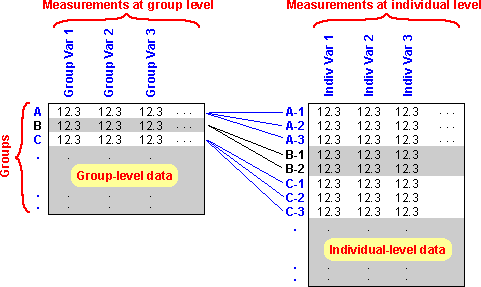

Clusters of 'individuals'
In some data sets, the basic 'individuals' are arranged in fairly small groups or clusters. For example, surveys are often conducted by sampling households, then recording information from every member of each household (a 'household survey').
A categorical variable could distinguish between the groups, but its values (e.g. the houshold names) would be of little direct interest.
Data at different levels
Some measurements are usually recorded at group level rather than individual level. These values could be stored in a separate group-level data matrix.

Information can be exchanged between the two data matrices in order to analyse both sets of data together.
Information can be obtained from multi-level data by examining both the group-level and individual-level data matrices.
Properly analysing multi-level data and interpreting the results of the analysis require a lot of careful thought!